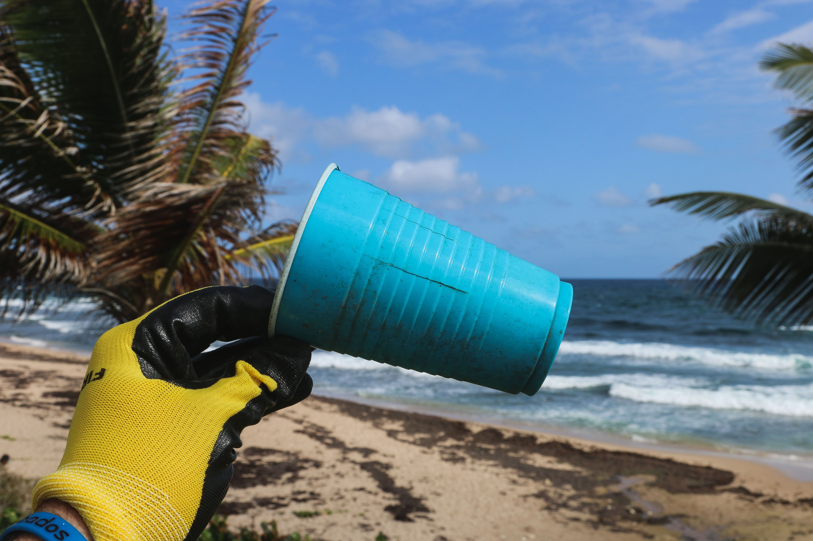
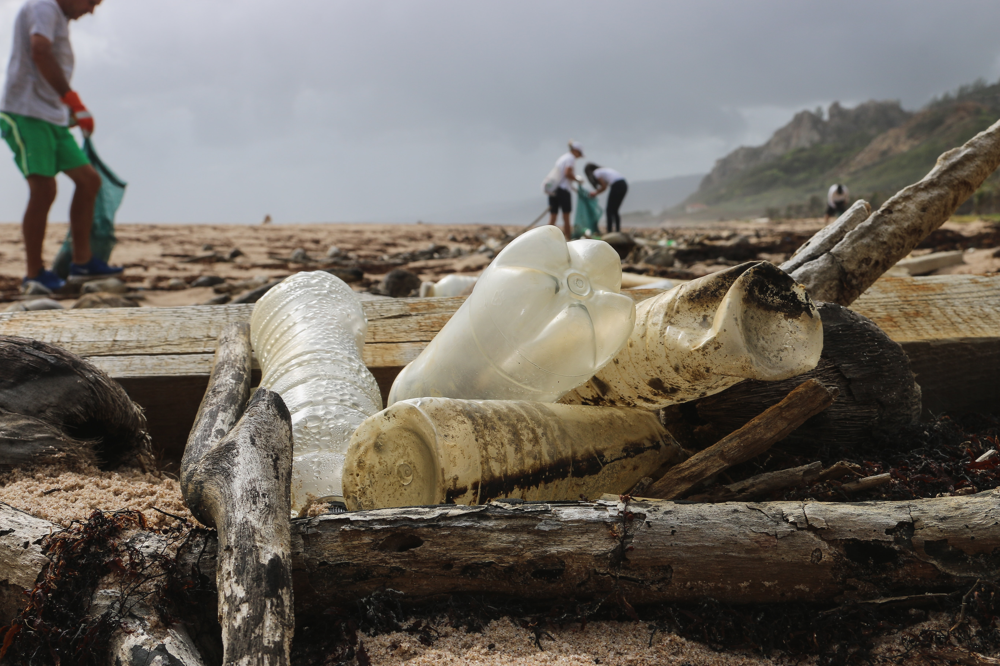

Street litter is the litter usually found next to the footpaths, crosswalks and other urbanised areas. We have been littering the surroundings, killing animals along the way. While street litter is illegal, there are still thousands of these pieces scattered across the area, ranging from the sides of footpaths, the sewage systems and even natural environments. When it rains, most of this street litter falls down into the sewage systems, eventually being swept out into the ocean, killing thousands of whales and fish, and eventually being digested by humans. The old water bottle you threw on the streets probably ended up here, maybe even eaten by baby turtles, killing them from the inside. It’s time to bring light to the silent killer that is killing species in all parts of the ocean, street litter.
|
The aim of the Janefield Wetland Litter Hotspot Mapping System is to identify and analyse street litter hotspots in the Janefield Wetlands. The Janefield Wetlands are home to many species of native fauna and street litter can pose a threat to their lives and their environment. With the identification, analysis and mapping of these street litter hotspots, further action by organisations to create innovative solutions to tackle the problem of street litter. The project can then be scaled up further to monitor various areas in both the municipality and in the state. |
 |
|
The aim of the Janefield Wetland Litter Hotspot Mapping System is to identify and analyse street litter hotspots in the Janefield Wetlands. The Janefield Wetlands are home to many species of native fauna and street litter can pose a threat to their lives and their environment. With the identification, analysis and mapping of these street litter hotspots, further action by organisations to create innovative solutions to tackle the problem of street litter. The project can then be scaled up further to monitor various areas in both the municipality and in the state. |
|  |
The Janefield Wetlands Litter Hotspot Mapping System is split into three components - the GPS tracking system, the data storage system and the web application. The GPS Tracking System is a module that is attached to litter pickers. The module consists of a Particle Electron fit with a GPS Shield on top. The module uses rechargeable Lithium-ion batteries to supply its power and is responsible for the getting GPS locations street litter. To conserve power, the module is in sleep mode unless the accelerometer pick up motion signatures of people picking litter up. When such a motion signature is detected, the module boots up, records the GPS location and publishes it to the Particle Cloud. The Data Storage Component is responsible for retrieving the GPS data from the Particle Cloud and storing it in a database. This component consists of a Raspberry Pi, which continuously checks for any new GPS data on the Particle Cloud. When there is new GPS data on the Particle Cloud, the Raspberry Pi then gets the GPS data via HTTP get requests and then stores them in the database. The Web Application is the last component in the system. When there is new GPS data in the database, the web application generates a new map with the new GPS data. These maps are then published online, where citizen scientists can view the data coming in live. |
|
The Sensing Component measures the conductivity, pH and temperature values from the water on regular intervals. It then sends this data to another BBC Microbit via radio signals. The sensing component is placed in the water and powered by solar panels to make it gain clean energy. Once data is received by the BBC MicroBit that is attached to an Arduino, the Arduino then transmits the data onto the 4G network, to make it available for further analysis. This component is attached to a display board which is located near a sidewalk close to the Plenty River. This board uses 4 LEDs indicators to show the water quality at a particular time. This board also educates information about the platypuses which live in the river. This component also uses solar panels to get power. The Data Receiver and Storage Component consists of a BBC Microbit that receives the data from cloud using 4G network and then pass that data to Raspberry Pi via serial port using decoder settings ‘UTF-8’. The Raspberry Pi process the data and save it in the data storage location. Data is stored in 3 separate data storage locations for pH, Conductivity and Temperature. The Water Quality Checking System allows the user to extract data from the database and process it using Matplotlib library to plot various graphs (Line, Pie, Scattered graphs etc.). The application process data in yearly and daily wise and allows user to view daily and yearly wise graphs for each data value (Temperature, Conductivity and pH). |